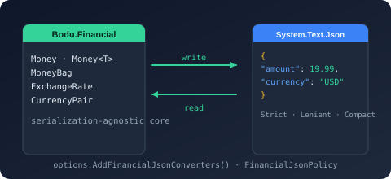

Bodu.Financial.Serialization.Json

Bodu.Financial.Serialization.Json is the System.Text.Json companion to Bodu.Financial. It ships the six converters that round-trip the monetary and exchange-rate value types — Money<TCurrency>, Money, CalculatedMoney, MoneyBag, ExchangeRate, and CurrencyPair — a single FinancialJsonPolicy that selects one coherent wire shape for all of them, the one-call AddFinancialJsonConverters registration, and the AddFinancialJson dependency-injection registration. Part of the Numerics & Financial topic.
Bodu.Financial.Serialization.Json is a Stable package. The core library is deliberately serialization-agnostic — its types carry no [JsonConverter] attribute and take no dependency on System.Text.Json — so JSON support is opt-in: without this package and a registration call, JsonSerializer falls back to reflection-shaped output for these types rather than throwing.
Core mental model
One policy, six converters, one options instance:
JsonSerializerOptions
▶ .AddFinancialJsonConverters(FinancialJsonPolicy.Strict | Lenient | Compact)
├─ MoneyOfTCurrencyJsonConverterFactory → Money<USD>, Money<EUR>, … (closed per TCurrency at run time)
├─ MoneyJsonConverter → Money
├─ CalculatedMoneyJsonConverter → CalculatedMoney
├─ MoneyBagJsonConverter → MoneyBag
├─ ExchangeRateJsonConverter → ExchangeRate
└─ CurrencyPairJsonConverter → CurrencyPair
▶ JsonSerializer.Serialize / Deserialize as normal
The policy is chosen once per JsonSerializerOptions and applies to every financial type serialized with it. Strict is the canonical, audit-grade object shape; Lenient reads the same shape more tolerantly for imports; Compact collapses each value to its smallest readable form.
The shape of the library
Everything lives in the Bodu.Financial.Serialization.Json namespace.
Registration
| Type | Purpose |
|---|---|
| FinancialJsonSerializerOptionsExtensions | AddFinancialJsonConverters(this JsonSerializerOptions options, FinancialJsonPolicy policy = Strict) — adds all six converters and returns the same options instance for chaining. |
| FinancialJsonServiceCollectionExtensions | AddFinancialJson(this IServiceCollection services, FinancialJsonPolicy policy = Strict) — registers a configured JsonSerializerOptions as a keyed singleton under JsonOptionsKey ("Financial"). |
| FinancialJsonPolicy | The wire-shape selector: Strict = 0, Lenient = 1, Compact = 2. |
Converters
Each converter has a parameterless constructor (defaulting to Strict) and a (FinancialJsonPolicy policy) constructor, so any one can also be added to JsonSerializerOptions.Converters by hand.
| Type | Converts | Strict / Lenient shape | Compact shape |
|---|---|---|---|
| MoneyOfTCurrencyJsonConverter<TCurrency> via MoneyOfTCurrencyJsonConverterFactory | Money<TCurrency> | { "amount": 19.99, "currency": "USD" } — currency must equal TCurrency.IsoCode |
"19.99 USD" |
| MoneyJsonConverter | Money | { "amount": 19.99, "currency": "USD" }, plus "scale" when the value carries an explicit minor-unit scale |
"19.99 USD" — fractional digits carry the scale |
| CalculatedMoneyJsonConverter | CalculatedMoney | { "amount": 0.0325125, "currency": "USD" } — the unrounded decimal verbatim |
"0.0325125 USD" |
| MoneyBagJsonConverter | MoneyBag | { "balances": { "EUR": 50.00, "USD": 100.00 } } |
{ "EUR": 50.00, "USD": 100.00 } |
| ExchangeRateJsonConverter | ExchangeRate | { "from", "to", "date", "rate", "provider", "isInverted" } (+ observedRate when inverted, fetchedAtUtc when known) |
{ "pair": "EUR/USD", "date", "rate", "provider" } (+ the same optional members) |
| CurrencyPairJsonConverter | CurrencyPair | { "from": "USD", "to": "JPY" } |
"USD/JPY" |
Choosing a policy
| Policy | Read behavior | Use case |
|---|---|---|
Strict (default) |
Property names compare case-insensitively; duplicate properties are rejected; unknown properties are ignored; a currency that does not match TCurrency.IsoCode is rejected. |
Ledgers, persistence, audit — the canonical shape. |
Lenient |
Same shape and rules as Strict, but normalizes lowercase ISO codes to uppercase and trims surrounding whitespace before validation. Writes exactly what Strict writes. |
Importing spreadsheets and external feeds. Not a canonical storage shape. |
Compact |
Single-string money ("19.99 USD" or "USD 19.99" accepted on read), flat ISO-keyed bags, slash pairs, and a pair-keyed rate object. |
Wire-size-sensitive APIs and human-readable log lines. |
Scenarios this library covers
| Scenario | Reach for |
|---|---|
| Persist a typed amount and refuse a payload whose currency drifted | Money<TCurrency> under Strict — a mismatch is a JsonException, never a silently re-tagged amount |
| Deserialize an amount whose currency is data, not type | Money under any policy, then As<T>() / TryAs at the boundary |
| Keep a six-decimal unit price exact through storage | Money with an explicit scale — the object shape's scale property, or the printed digits under Compact |
| Transport an unsettled, unrounded amount | CalculatedMoney — written verbatim, settled with RoundToMoney() after transport |
Ingest "usd" / " USD " from a spreadsheet export |
Lenient |
| Shrink a payload or make a log line readable | Compact |
| Store the audit trail of a dated rate lookup | ExchangeRate — provider, date, rate, inversion flag, observed rate, and fetch instant all round-trip |
| Share one configured options instance across an application | services.AddFinancialJson(policy) and resolve the keyed JsonSerializerOptions |
Design choices
- Opt-in, not attribute-driven. The core types carry no
[JsonConverter], so a consumer ofMoney<TCurrency>that never serializes pays nothing, and the wire shape is a deliberate per-options decision rather than a global default baked into the type. - One policy for every type.
AddFinancialJsonConvertersregisters all six converters under the same policy; mixing policies across types on one options instance is not supported, so a payload is always internally consistent. - Currency drift is an error.
Money<TCurrency>rejects acurrencythat does not match the type parameter;Moneyaccepts any code in the shipped ISO 4217 catalogue and rejects one outside it. - Precision survives the round trip. All three policies preserve an explicit minor-unit scale on
Moneyand writeCalculatedMoneyunrounded; amounts are emitted as JSON numbers, and the reader also accepts numeric strings for systems without arbitrary-precision numbers. - Duplicates are rejected, never last-wins. A duplicated
amount,currency, orscaleon a financial payload is a data-integrity hazard and surfaces asJsonException.
Where to go next
- Core concepts — policy, canonical object shape, compact form, scale, verbatim
CalculatedMoney, the rate and pair shapes, keyed options, failure modes. - Getting started — install + minimal samples for each policy, each converter, and the DI registration.
- Financial JSON serialization guide — every converter's wire shape under every policy, scale handling, DI, and migration notes.
- Monetary precision & unit pricing — the three-tier precision model the
scaleproperty andCalculatedMoneyserve. - Bodu.Financial introduction — the types being serialized.
- Bodu.Numerics.Serialization.Json — the sibling companion package for
Fraction<T>,Interval<T>, and friends, with the same policy model. - Bodu.Financial.Serialization.Json API reference — full type-by-type docs.
- Runnable samples — the
JsonSerializationandUnitPricingsample projects.